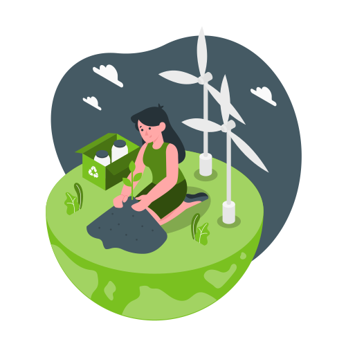
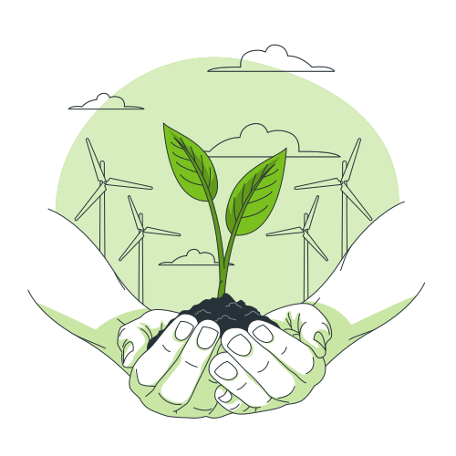

Pensar no futuro é agir no agora
E se você ajudasse a sua cidade a ser mais limpa e contribuísse com o meio ambiente ao mesmo tempo? Vamos fazer a nossa parte para ajudar com a preservação do planeta. Faça parte do time CICLIX e recicle os resíduos de sua casa de forma acessível e sustentável. Faça a diferença no seu bairro. Venha fazer parte!
Iniciativa
A equipe CICLIX pensa em educação ambiental e sustentabilidade. Somos um grupo de jovens programadores que sonham em fazer a diferença em nossa comunidade utilizando nossos conhecimentos técnicos, unindo tecnologia e meio ambiente.
 1ª etapa
Realizar o cadastro no site.
2ª etapa
Acessar a aba de agendamento e fornecer seu endereço para agendar o dia da coleta (você mesmo irá fazer isso!)
3ª etapa
Seu lixo será coletado pelo transporte de coleta da empresa parceira.